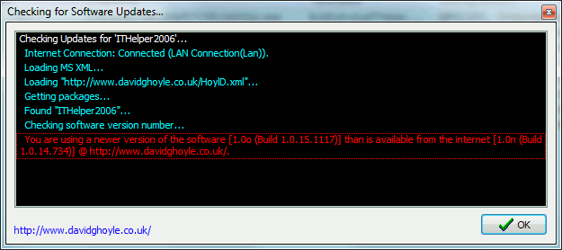

This option forces the add-in to check the internet for updates to the add-in software. If there are updates, these will be displayed in the dialogue.
The add-in does not download the updates for you, you must click on the web site address in the bottom left of the dialogue to bring up a browser where you can download the latest version.